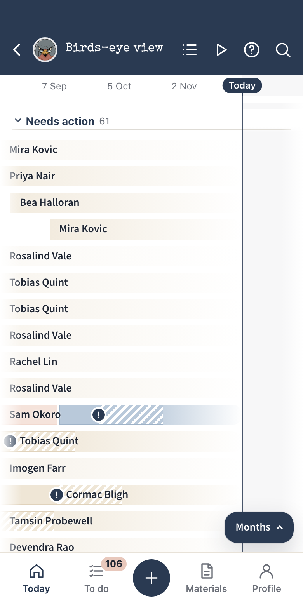
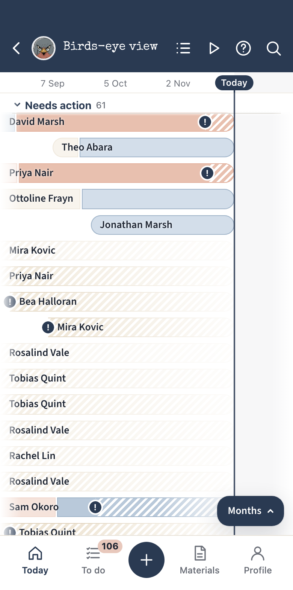
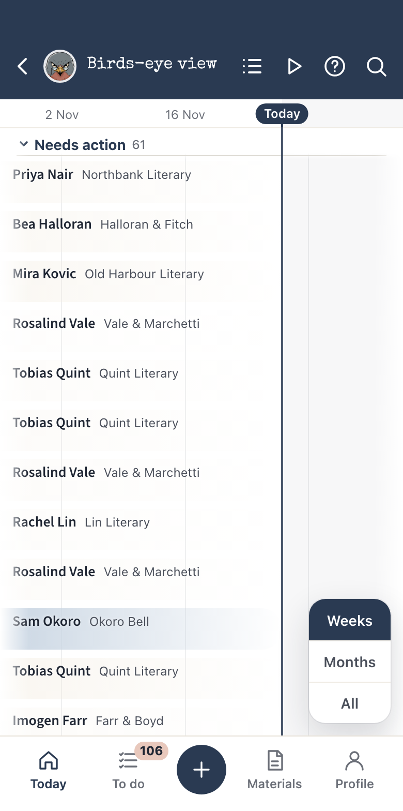

1 · Months, with gone-quiet rows

before (v3.2): solid fades after the hatching; quiet rows high in Needs action
after (v3.3): hatched all the way, fading out; quiet rows last
2 · The switch open

before: the chip replaced by the three levelsafter: the chip stays below, chevron down